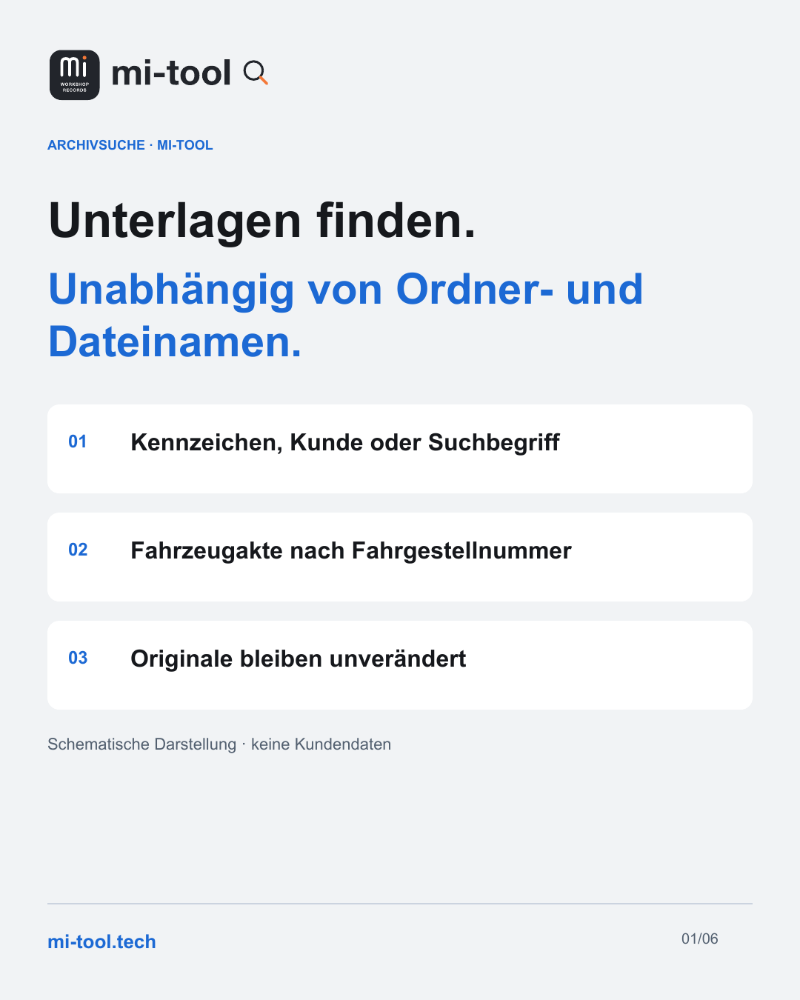
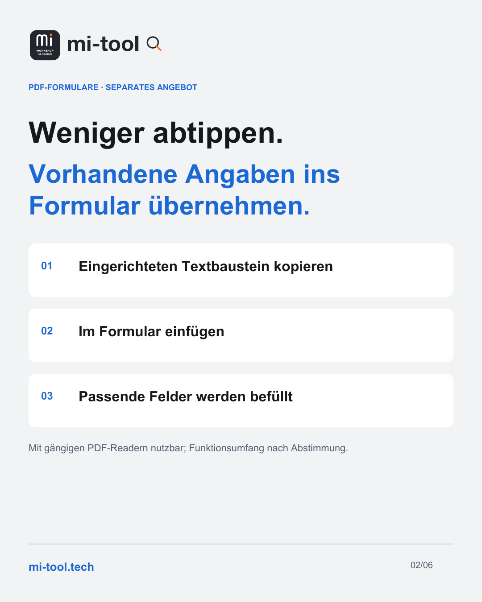
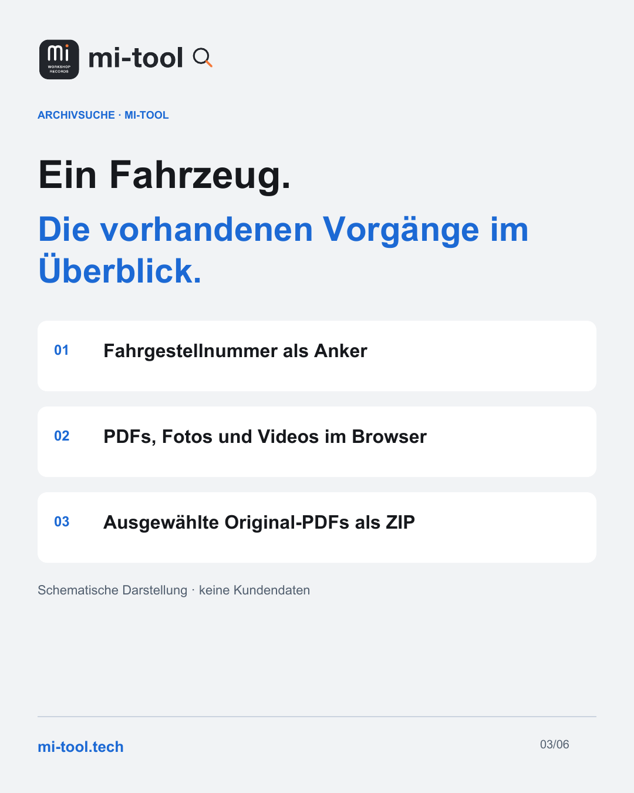
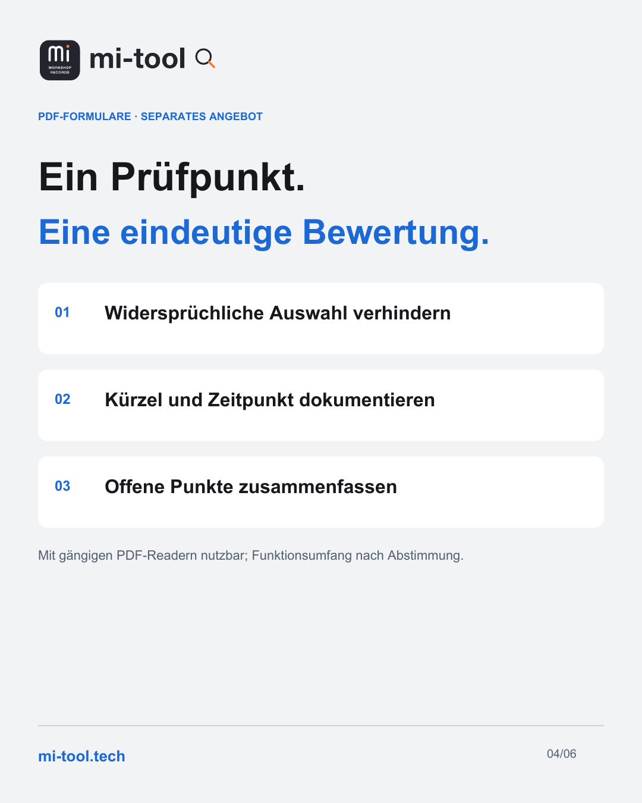

Jeder Beitrag steht hier so, wie er veröffentlicht wurde. Diese Seite lädt nichts von LinkedIn nach; wer dort mitlesen möchte, folgt dem Verweis am Beitrag.
15. September 2026
Unterlagen finden.
Unabhängig von Ordner- und Dateinamen.

Unterlagen finden. Unabhängig von Ordner- und Dateinamen.
Nach dem Service beginnt die Nachbearbeitung: Eine Versicherungsnummer, eine Vorgangsnummer oder die Unterlagen zu einem Fahrzeug werden benötigt. Entscheidend ist dann, was in den Dokumenten steht – nicht, wie jemand den Ordner benannt hat.
mi-tool · Workshop Records macht vorhandene Serviceunterlagen durchsuchbar: nach Kennzeichen, Kundenname oder einem Suchbegriff im Dokument. Die Fahrzeugakte führt die vorhandenen Vorgänge über die Fahrgestellnummer zusammen, auch über eingebundene Standorte hinweg.
Die Suche läuft im Browser. Die Verarbeitung der Archivdaten bleibt im Hausnetz, Originaldateien und Ablage bleiben unverändert.
Auf der Webseite zeigen wir die Oberfläche mit erfundenen Beispieldaten:
https://mi-tool.tech/
Welche Unterlagen müsst ihr bei der Nachbearbeitung am häufigsten wiederfinden? Für Fragen zum eigenen Servicestandort gibt es das Kontaktformular – technische Angaben sind freiwillig.
#mitool #WorkshopRecords #Aftersales #Servicestandort
Beitrag auf LinkedIn ↗
17. September 2026
Weniger abtippen.
Vorhandene Angaben ins Formular übernehmen.

Kunde, Fahrzeug und Auftrag sind erfasst. Warum dieselben Angaben noch einmal abtippen?
Neben der Archivsuche unterstützen wir bei strukturierten PDF-Formularen. In passend eingerichteten Formularen lässt sich ein vorbereiteter Textbaustein aus DIGI.DISPO kopieren und über ein Eingabefenster einfügen. Das Formular verteilt die Angaben auf die vorgesehenen Felder.
Das ist keine pauschale Schnittstelle zu jedem DMS: Textbaustein und Feldbezeichnungen müssen aufeinander abgestimmt sein. Die Formulare lassen sich mit gängigen PDF-Readern nutzen. Den Funktionsumfang stimmen wir auf das eingesetzte Programm ab.
Je nach Formular können anschließend fehlende Angaben markiert oder Werte berechnet werden. Welche Funktionen sinnvoll sind, richtet sich nach dem jeweiligen Ablauf.
Strukturierte PDF-Formulare sind ein eigenständiges Angebot, zusätzlich zur mi-tool-Archivsuche. Die Formulare werden erstellt und ausgefüllt; mi-tool hilft später beim Wiederfinden vorhandener Unterlagen.
Mehr dazu und Kontakt:
https://mi-tool.tech/#kontakt
Wo werden bei euch Angaben noch von einem Dokument ins nächste übertragen?
#PDFFormulare #Aftersales #Digitalisierung #Servicestandort
Beitrag auf LinkedIn ↗
22. September 2026
Ein Fahrzeug.
Die vorhandenen Vorgänge im Überblick.

Ein Fahrzeug hat eine Geschichte. Die Unterlagen liegen oft in vielen Vorgängen.
Die Fahrzeugakte in mi-tool bündelt vorhandene Werkstattvorgänge anhand der Fahrgestellnummer. Sie zeigt Datum, Kilometerstand und die zugeordneten Unterlagen – über die eingebundenen Standorte hinweg.
Ein Kennzeichen kann wechseln. Die Fahrgestellnummer verbindet die Vorgänge zum Fahrzeug.
PDFs, Fotos und Videos lassen sich direkt im Browser ansehen. Ausgewählte Original-PDFs können als ZIP-Paket exportiert werden. Die Originale im Archiv bleiben unverändert.
Es wird keine neue Fahrzeughistorie von Hand erfasst: mi-tool erschließt, was im eingebundenen Bestand vorhanden und erkennbar ist.
Die schematische Oberfläche mit erfundenen Beispieldaten findet ihr hier:
https://mi-tool.tech/#fahrzeugakte
Welche Unterlagen braucht ihr bei der Nachbearbeitung eines Fahrzeugs zusammen?
#mitool #Fahrzeugakte #WorkshopRecords #Aftersales
Beitrag auf LinkedIn ↗
24. September 2026
Ein Prüfpunkt.
Eine eindeutige Bewertung.

„In Ordnung“ und „nicht in Ordnung“ gleichzeitig angekreuzt?
In einem passend aufgebauten PDF-Formular lassen sich gegenseitig ausschließende Antworten als eindeutige Auswahl anlegen. Unabhängige Angaben bleiben separate Häkchen.
Weitere Funktionen können je nach Checkliste dazukommen:
• Fehlende Angaben sichtbar machen.
• Kürzel sowie Datum und Uhrzeit zum Prüfpunkt erfassen.
• Offene Mängel zusammenfassen.
• Vor dem Abschluss auf unbeantwortete Punkte hinweisen.
Die Formulare lassen sich mit gängigen PDF-Readern nutzen. Den Funktionsumfang stimmen wir auf das eingesetzte Programm ab. Ein Mitarbeiterkürzel unterstützt die Nachvollziehbarkeit; es ersetzt keine gesicherte Identitätsprüfung oder elektronische Signatur.
Wir unterstützen bei der Einrichtung solcher strukturierten PDF-Formulare als eigenständigem Angebot. Welche Prüfregeln gebraucht werden, klären wir anhand des Ablaufs am Servicestandort.
Anfrage und weitere Informationen:
https://mi-tool.tech/#kontakt
Welche Pflichtangabe fehlt auf euren Formularen besonders häufig?
#PDFFormulare #Qualitaetssicherung #Werkstatt #Aftersales
Beitrag auf LinkedIn ↗
Diese Beiträge sind terminiert. Der Text erscheint hier, sobald er auf LinkedIn steht.
29. September 2026, 08:30 Uhr
Im Haus betrieben.
mi-tool · Archivsuche und PDF-Formulare
1. Oktober 2026, 08:30 Uhr
Sauber erfassen.
mi-tool · Archivsuche und PDF-Formulare
6. Oktober 2026, 08:30 Uhr
Der Servicevorgang ist abgeschlossen.
mi-tool · BMW Service
8. Oktober 2026, 08:30 Uhr
Eine Versicherungsnummer liegt vor.
mi-tool · BMW Service
13. Oktober 2026, 08:30 Uhr
Ein Kennzeichen kann wechseln.
mi-tool · BMW Service
15. Oktober 2026, 08:30 Uhr
Eine Fundstelle ist hilfreich.
mi-tool · BMW Service